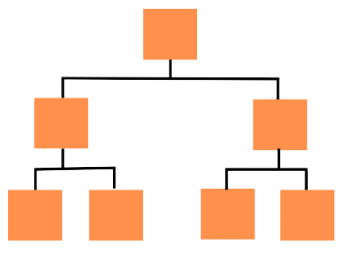

महाराष्ट्र राज्य परीक्षा परिषद,
पुणे
MAHARASHTRA STATE COUNCIL OF EXAMINATION,
PUNE

About Department

News & Latest Updates
महाराष्ट्र राज्य परीक्षा परिषदेतील गोडाऊन (अभिलेख कक्ष) येते पेस्ट कंट्रोल दरपत्रके मागविण्याबाबत
नमुना नं. ७ रोजकीर्द (Cash Book ) छपाई व पुरवठाबाबत दरपत्रके मागविणेबाबत
फाईल कव्हर छपाईसहित नमुन्याप्रमाणे पुरवठा करणेसाठी दरपत्रक मागविण्याबाबत
नमुना नं. ७ रोजकीर्द (Cash Book ) छपाई व पुरवठाबाबत दरपत्रके मागविणेबाबत
महाराष्ट्र राज्य परीक्षा परिषदेतील पेट्या (ट्रंक) दुरुस्तीसाठी दरपत्रके मागविण्याबाबत
फाईल कव्हर छपाईसहित नमुन्याप्रमाणे पुरवठा करणेसाठी दरपत्रक मागविण्याबाबत
नटबोल्ट पुरवठा करणेकरीता दरपत्रके मागविणेबाबत
नमुना नं. ७ रोजकीर्द (Cash Book ) छपाई व पुरवठाबाबत दरपत्रके मागविणेबाबत
महाराष्ट्र राज्य परीक्षा परिषदेतील पेट्या दुरुस्तीसाठी दरपत्रके मागविणेबाबत
महाराष्ट्र राज्य परीक्षा परिषदचे माल वाहतूक वाहनास उपकरणे बसविणेसाठी दरपत्रके मागविणेबाबत
महाराष्ट्र राज्य परीक्षा परिषदचे Maruti Suzuki Ertiga वाहनाची उपकरणे बसविणेसाठी दरपत्रके मागविणेबाबत
महाराष्ट्र राज्य परीक्षा परिषदेतील पेट्या दुरुस्तीसाठी दरपत्रके मागविणेबाबत
वजन काटा (Electronic Weighting Scale Platform 200 Kg) खरेदी करणेसाठी दरपत्रके मागविणेबाबत
परिषदेतील जुने लोखंडी कपाटास कडी कोयंडा / दुरुस्तीचे दरपत्रकाबाबत
Tea/Coffee Despensing Machine खरेदी करणेसाठी दरपत्रके मागविणेबाबत
परिषदेसाठी नवीन Table Top Scanner व Seagate Hard Disk चे दरपत्रके मागविणेबाबत
महाराष्ट्र राज्य परीक्षा परिषदचे Maruti Suzuki Ertiga वाहनाची उपकरणे बसविणेसाठी दरपत्रके मागविणेबाबत
परिषदेसाठी EPABX (Electronic Private Automatic Branch Exchange) यंत्रणा देखभाल व दुरुस्तीबाबत
चहा, नाश्ता व जेवण यासाठी दरपत्रके मागविणेबाबत
मा. अध्यक्ष दालनातील भिंती व छप्पर भिंतींची रंगरंगोटी करण्याबाबत
नवीन Short Message Service (SMS) सुविधा खरेदी करणेसाठी दरपत्रके मागविण्याबाबत
नवीन स्टँडिंग फॅन दरपत्रके मागविणेबाबत
महाराष्ट्र राज्य परीक्षा परिषदेतील पेट्या दुरुस्तीसाठी दरपत्रके मागविणेबाबत
चहा, नाश्ता व जेवण यासाठी दरपत्रके मागविणेबाबत
नवीन स्टँडिंग फॅन दरपत्रके मागविणेबाबत
महाराष्ट्र राज्य परीक्षा परिषदेतील पेट्या दुरुस्तीसाठी दरपत्रके मागविणेबाबत
नटबोल्ट पुरवठा करणेकरीता दरपत्रके मागविणेबाबत
महाराष्ट्र राज्य परीक्षा परिषदेच्या अधिकारी वर्गास नवीन खुर्ची खरेदी करण्याबाबत
८ फूट व १२ फूट शिडी (Ladder) खरेदी करणेबाबत
चहा, नाश्ता व जेवण यासाठी दरपत्रके मागविणेबाबत
नटबोल्ट पुरवठा करणेकरीता दरपत्रके मागविणेबाबत
रद्दी विक्री करणेसाठी दरपत्रक मागविणेबाबत
परिषदेसाठी EPABX (Electronic Private Automatic Branch Exchange) यंत्रणा देखभाल व दुरुस्तीबाबत
परिषदेसाठी स्वच्छ पाणी जार ( फिल्टर जार ) पुरवठा करणेसाठी दरपत्रक मागविणेबाबत
परिषदेतील रद्दी विक्रीबाबत दरपत्रक मागविणेबाबत
परिषदेतील सर्व शाखांमध्ये व गोडाऊनमध्ये पेस्ट कंट्रोल करणेकरीता दरपत्रक मागविणेबाबत
महाराष्ट्र राज्य परीक्षा परिषद, पुणे येथील धोकादायक वृक्षांचा विस्तार कमी करणेबाबत
महाराष्ट्र राज्य परीक्षा परिषदेतील रजिस्टर बायडिंग करणेसाठी दरपत्रक मागविण्याबाबत
महाराष्ट्र राज्य परीक्षा परिषदेतील रजिस्टर बायडिंग करणेसाठी दरपत्रक मागविण्याबाबत
नटबोल्ट पुरवठा करण्याकरिता दरपत्रक मागविण्याबाबत
परिषदेतील EPABX (Electronic Private Automatic Branch Exchange) यंत्रणा देखभाल व दुरुस्तीबाबत
परिषदेतील सी सी टी यंत्रणा देखभाल व दुरुस्तीबाबत
महाराष्ट्र राज्य परीक्षा परिषद पुणे येथील धोकादायक वृक्षांचा विस्तार कमी करणेबाबत
झेरॉक्स मशीन क्र. ५३३५ टोनर / कार्टेज व इतर सुटे भाग साहित्य पुरवठा करणेसाठी दरपत्रक मागविणेबाबत
सर्व्हर भाड्याने घेणेबाबत.... (सन २०२२ - २०२३)
परिषदेतील शैचालये नूतनीकरणासाठी दरपत्रके मागविणेबाबत.....
Note -Dr.Babasaheb Ambedkar Research & Training Institute(Pune)
Important Links
संपर्क
पत्ता :
आयुक्त,
महाराष्ट्र राज्य परीक्षा परिषद,
महाराष्ट्र राज्य माध्यमिक आणि उच्च माध्यमिक शिक्षण मंडळ (दूसरा व चौथा मजला) सर्वे नंबर ८३२ ए , फायनल प्लॉट क्रमांक १७८ व १७९, बालचित्रवाणी जवळ , आघारकर रीसर्च इंस्टीट्यूटच्या मागे भांबुर्डा , शिवाजीनगर , पुणे 411004
Landline No - 020-29709617 Email ID - mscepune@gmail.com
शासकीय वेबसाईट्स
Copyright © 2022-23 महाराष्ट्र राज्य परीक्षा परिषद .
महाराष्ट्र राज्य परीक्षा परिषद .
Developed and Maintained by MAHARASHTRA STATE COUNCIL OF EXAMINATION.
All Rights Reserved.